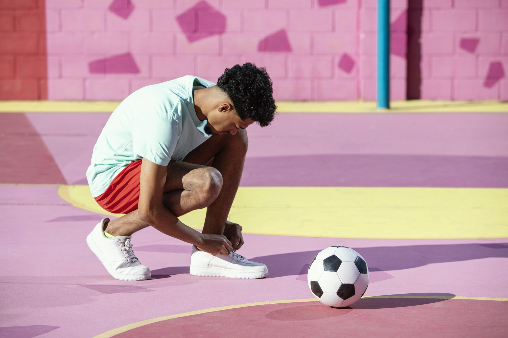
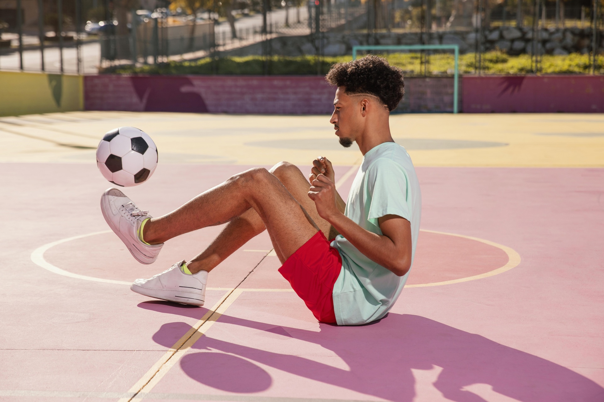

Scroll. A portrait breaks into 120,000 points that drift and reassemble into a wordmark, then come back.
morph
The connecting tissue stretches and snaps, like honey or wax pulling apart, instead of fading.
comice('#film').use(morph({
to: { type: 'shape', path: applePath, viewBox: [0, 0, 24, 24] },
liquid: 0.7, join: { style: 'slab', sag: 6, dissolve: 4 },
})).driver(scroll())
distort
Not a shape drawn at a point: the image itself bends around the pointer. Move over each one.


comice('.fx-glass').use(distort({ effect: 'glass' })).driver(pointer())
spotlight
Hover (or tap) a project. It widens, its peers soften and dim, and a real, selectable caption appears.
comice('.project').use(spotlight({
peers: { selector: '.project', blur: 4, dim: 0.4 },
reveal: '.meta', expand: 2.4,
})).driver(hover())
rail + type
Real momentum and a snap into place; arrow keys work, and screen readers hear which one is active. The name is live text that melts word to word.
Adaeze
comice('.name').use(type({ mode: 'melt', melt: { blur: 14, threshold: [0.5, 18] } }))
comice('#rail').use(rail({
mode: 'coverflow', inertia: 0.94, snap: true,
onActive: (i) => (name.textContent = names[i]),
}))
dissolve
comice('#gallery').use(dissolve({
transition: 'noise', to: [gold, ember, atelier],
noise: { scale: 2, intensity: 1, softness: 0.2 },
})).driver(scroll())
reveal
No driver at all: each image slats open when it scrolls into view, as a wave from the corner. It never shows a blank frame: it waits for the image to decode.
comice('.grid figure').use(reveal({ effect: 'blinds', stagger: { each: 0.06, grid: 'auto' } }))
ascii · mosaic · color
Live video as characters, a halftone in brand colours, a duotone with film grain. Every parameter is live: drag the slider.
const art = ascii({ cell: 10 })
comice('#as-ascii').use(art)
slider.oninput = () => asciiHandle.set(art, { cell: slider.value })
signals → parameters
Fela on the speakers: the bass pushes the lens, the highs turn the hue. Neither plugin knows audio exists: one line of mapping connects them.
comice('#au-distort').use(lens).driver(audio({ source: '#soundtrack' }))
.map('bass').to(lens, 'strength', { output: [0, 0.9] })
comice('#au-color').use(grade).driver(audio({ source: '#soundtrack' }))
.map('high').to(grade, 'shift')
aura
The playing video is sampled a few times a second; its palette becomes this section's background and the swatches below, clamped so text stays readable.
comice('#reel').use(aura({
sample: 'palette', colors: 5, contrast: 4.5,
onSample: (colors) => paint(colors),
}))